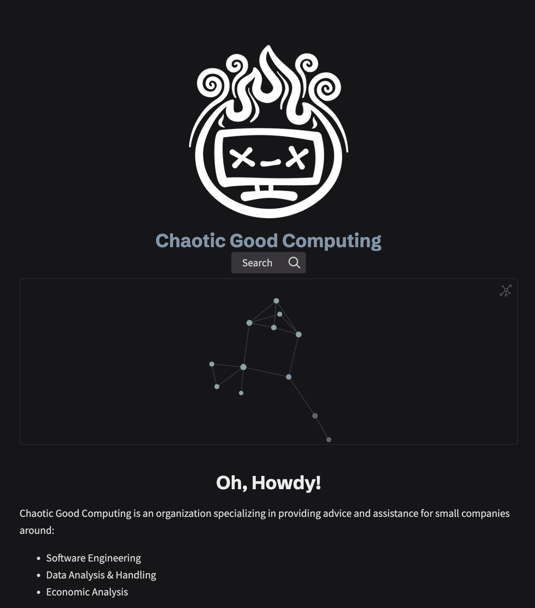

⇐ 2024-03-08 | 2024-03-11 ⇒
CAVEAT LECTOR: This is a daily note! Sometimes they’ll be structured, sometimes they won’t. These are more for the benefit of my near- and long-term future self, but I do tend to publish them in case they’re somehow helpful for other people.
Today’s Plan
With a bit of a half-planned half-day, I’m at my office again (to put distance between me and that god-forsaken server, which has taken far too much of my time) to focus up on the CGC website.
In particular, I’m hoping to restore a bit of professionalism to the front landing page. At the moment, it’s the quartz default, and doesn’t have either the font of my handwriting or the actual CGC logo on it. Before submitting some notes for an office highlight, I’d vastly prefer to have my website looking far less cobbled-together than it is now.
B-Block
- N/A
M-Block
- N/A
E-Block
- Laundry party! Tidying up the living room after the homelab explosion earlier this week
Today’s Report
To have the full intended experience, please listen to the Pikmin 2 “Today’s Report” theme while reading & writing this
UGH. This damn homelab server sucked me in again in this evening. A linux LVM is… oddly difficult to resize to the size of its new physical partition, and setting up a live disk to do that is incredibly stubborn. I’m in a difficult position with a goal and a few constraints:
- GOAL: Set up a Linux Live Disk that comes preconfigured with the utilities I need to remotely modify the server (e.g. lvm2, gparted, Chrome Remote Desktop (for remote-ness), etc)
- CONSTRAINT: I only have access to a MacBook Pro M2, Steam Deck, and the current 256G Proxmox instance itself
- SUBCONSTRAINT: There’s not many customizable options for flashing a customized Linux Live Disk on Mac
- SUBCONSTRAINT: The Steam Deck, despite being arch linux, fucking sucks at being used for Linux-y things due to the read-only1 root filesystem and kneecapped
pacmaninstallation - SUBCONSTRAINT: All other Linux instances I have are virtualized on Proxmox, which makes creating custom drives onto actual hardware a pain in the ass
To get around this, I’ve settled (currently) on using Linux Live Kit on a virtualized Debian instance, customized with everything I need, and then doing a hardware passthrough of the USB drive to load the customized distro as a recovery disk. Ultimately, this means:
- Using Proxmox…
- …to create a custom Debian live disk…
- …to use for remotely modifying LVM partitions…
- …to fix Proxmox.
this has sucked… a lot of time out of my life, most of which could’ve been better spent? and i’m debating whether or not to weather the clutter of moving a monitor back into the bedroom to just handle this.
Other than that, Mrs. Lincoln…
I did end up getting… a somewhat MVP up for the landing page of the site?

By all accounts, this doesn’t look good, but it at least has the logo available with… kinda? a title? ish?
There is a massive amount of frustration around having goals that require frontend know-how, despite not knowing frontend very well. I am debating, at the moment, the merits of continuing to use Quartz for the blog. I really like it on a design level, and specifically am very excited to dig into fixing what is ultimately Obsidian Publish’s unhelpful & messy (IMHO) network graph layout.
However…
Quartz, notably, is… weird? I think? The vibe I get is that Quartz was developed primarily for an audience who want, at a base level, to simply deploy an Obsidian vault onto the web without dealing with too much technical cruft. To that end, a lot of the actual frontend fundamental concepts seem to be abstracted away.
Looking through the Quartz Showcase, there’s not a whole lot of structural changes made in most of these examples. This throws out a bit of an orange flag, making me a bit nervous that the framework itself wasn’t intended (at a base level) to be very extensible2.
It feels, somewhat, like an opinionated piece of software.
The tricky thing about opinionated software is that, when you pick it up as a beginner, it’s hard to separate whether or not the things you’re learning are:
- The underlying, fundamental concepts of the technology you’re using (React.JS); or
- The Quartz-level specifics, such as QuartzComponents.
That said, I don’t know if I have much of an option - from what I can tell, the closest OSS alternatives to Obsidian Publish are typically Gatsby and Jekyll themes - both of which I’ve used previously for this site, to mixed results.
Notes
- https://music.youtube.com/watch?v=StlytUzBFcs&list=PLBxbqVsdFQnt5ihbCIkVa15MO7onhZwk5 - this channel has wildly impressive piano covers with super cool notes overlays - almost AR-esque?
- Due to an oversight, I am currently in the middle of a ~5 day gap in my prescriptions. I feel like my brain is currently operating with a constant background static noise that sounds vaguely like this
Footnotes
-
The read-only OS for the steam deck isn’t actually read only, since you can disable that, but it is substantially restrained in its ability to do normal arch-y things like disk management. I’m also running into the issue of Pacman’s GPG key database is still complaining that it’s read-only and locked. Not sure what that’s all about ¯\(ツ)/¯ ↩
-
So, there is such a thing as Quartz Plugins — the landing page work itself is a custom emitter plugin — but it doesn’t seem to have the same breadth or ecosystem that Gatsby did (I could be sub-informed, though, as I haven’t taken too close a look at Remark plugin integration yet). ↩